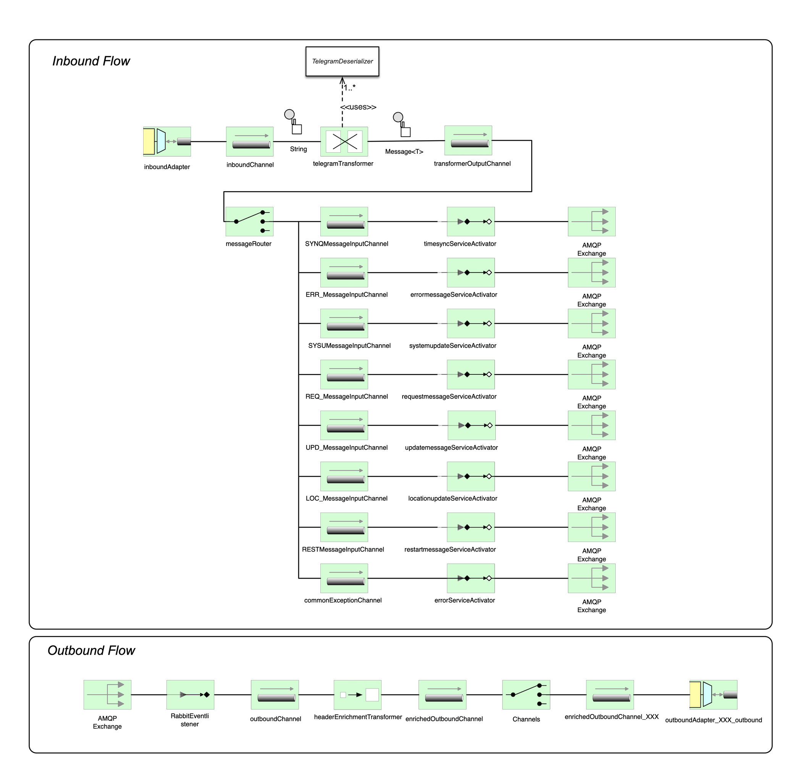

Intention
This standalone and runnable Spring Boot application is an implementation of the OSIP specification that communicates in OSIP TCP/IP message format with subsystems underneath. Those subsystems almost lack of resources and do not provide a higher level protocol on top of TCP/IP. The implementation is aware of multiple tenants (e.g. projects) and may run in the cloud with different port settings. Note: This does not allow instantiating multiple instances of the same driver component at one time. Each instance must have its own configuration, in particular TCP/IP port settings. A project (tenant) may have multiple drivers deployed, with all running on different ports.
Requirements
Functional Requirements
| ID | Name | Priority | Description |
|---|---|---|---|
| FR001 | Support OSIP 1.0 | HIGH | All functionality by OSIP defined must be implemented |
Non-functional Requirements
| ID | Group | Priority | Description |
|---|---|---|---|
| NR001 | Performance | HIGH | All expected responses to OSIP requests must be sent within 150 milliseconds from message arrival. |
| NR002 | Scalability | MEDIUM | The component must be capable to scale out horizontally within a projects scope (same tenant). |
| NR003 | Extendability | MEDIUM | New telegram types (OSIP versions) must be integrated in an encapsulated fashion. At best a new library can be dropped onto the classpath, at minimum all artifacts of the new telegram implementation must be located in the same Java package without the need to touch existing other packages. |
Architecture
The module uses a couple of the well known Enterprise Integration Patterns (EIP), like a Router, Transformer or an Enricher. For that reason Spring Integration is used as integration framework. In addition this is a very convenient and flexible way to adopt new transport channels beside TCP/IP.
The overall integration architecture is shown below. The entry point is the inboundAdapter that is connected to a TcpNetServerConnectionFactory (not shown) and forwards incoming telegrams
to the inboundChannel. A first transformer (telegramTransformer) terminates the ASCII string and converts into a Spring Message.
This is done with support of the appropriate MessageMapper that should exist for each telegram type. For instance the TimesyncTelegramMapper knows best
how to transform from a String into a TimesyncRequest. After the telegram is transformed into a valid message type the generic
messageRouter picks up the right queue and activates the proper ServiceActivator. Notice that the service activators
queue name is built on the fly and follows a naming convention. This is one aspect to support requirements NR003.
